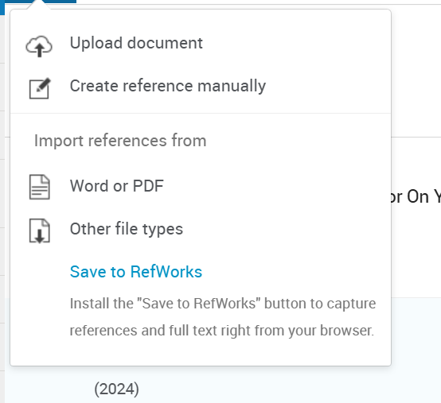
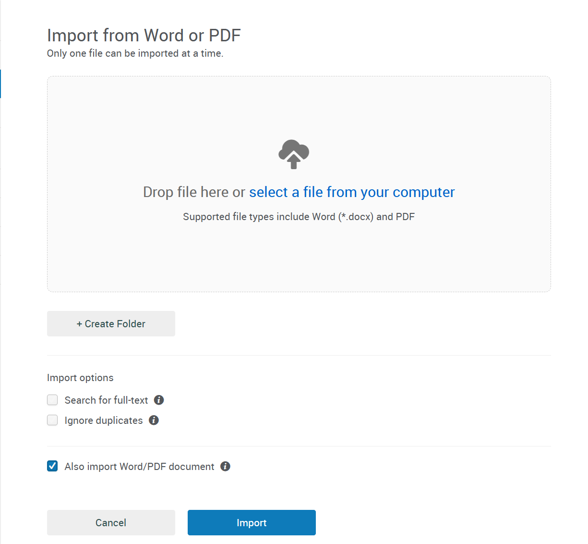

<section>
  <div>
    <!-- Main content block -->
    <div class="task-card1">
      <div class="card-header" onclick="toggleCard(this)">
        <h1>Task 3: Virtual Collaboration and RefWorks</h1>
        <button class="collapse-btn">−</button>
      </div>
      <div class="card-content">
        <h2>Report on Virtual Collaboration</h2>

        <h3>Lights, camera, action!</h3>
        <p>
          Effective virtual collaboration demands a deliberate effort to address common team issues, especially those related to commitment and accountability. The training materials cover this topic through three main models: Tuckman’s Stages of Team Development, Lencioni’s Five Team Dysfunctions, and, most importantly, the Radical Candor Framework as a practical solution.
        </p>
        <p>
          Team development is often described by Tuckman and Jensen’s model, which includes the stages of Forming, Storming, Norming, Performing, and Adjourning <a href="#ref1" class="ref-link">[1]</a>. During the Norming stage, team members begin to resolve their differences, build trust, and understand each other’s strengths and weaknesses <a href="#ref2" class="ref-link">[2]</a>. However, this stage also comes with risks: the desire to conform and avoid conflict <a href="#ref2" class="ref-link">[2]</a> can lead to a temporary harmony.
        </p>
        <p>
          This fear of conflict is a fundamental problem described in Patrick Lencioni’s model <a href="#ref3" class="ref-link">[3]</a>. A lack of trust leads to a fear of conflict, which in turn leads to a lack of commitment and avoidance of accountability <a href="#ref4" class="ref-link">[4]</a>. For teams to function effectively and overcome these dysfunctions, they must be able to give and receive constructive feedback <a href="#ref4" class="ref-link">[4]</a>.
        </p>
        <p>
          This is where the Radical Candor framework, popularised by Kim Scott, becomes a vital tool <a href="#ref5" class="ref-link">[5]</a>. It is based on two core principles: “Care Personally” and “Challenge Directly” <a href="#ref5" class="ref-link">[5]</a>. This model creates four quadrants of feedback. “Ruinous Empathy” occurs when you care but don’t challenge (e.g., not wanting to hurt feelings). Obnoxious Aggression is when you challenge but don’t care. Manipulative Insincerity is when you don’t. The ideal is Radical Candor, where you both demonstrate personal concern and provide direct, honest feedback <a href="#ref5" class="ref-link">[5]</a>, <a href="#ref6" class="ref-link">[6]</a>.
        </p>
        <p>
          Using this approach helps build trust and ensures that feedback is outcome-oriented and intended to help <a href="#ref6" class="ref-link">[6]</a>. As noted in the discussion of implementing this model, it is important to begin by explaining why the team is using it, sharing personal stories to demonstrate vulnerability and build trust from the start <a href="#ref7" class="ref-link">[7]</a>. Radical Candor thus serves as a mechanism for constructive conflict, which is necessary to achieve genuine commitment and accountability in a virtual team.
        </p>
      </div>
    </div>

    <!-- RefWorks photos block - UPDATED for lightbox -->
    <div class="task-card1">
      <div class="card-header" onclick="toggleCard(this)">
        <h2>RefWorks — Screenshots & Steps</h2>
        <button class="collapse-btn">−</button>
      </div>
      <div class="card-content">
        <p>Below are example screenshots and short captions showing how RefWorks was used. Click any image to open the full-size version.</p>

        <div class="refworks-gallery">
          <figure>
            <a href="images/refworks-step1.png" data-caption="1) Upload / import (Word or PDF)">
              
            </a>
            <figcaption>1) Upload / import (Word or PDF)</figcaption>
          </figure>

          <figure>
            <a href="images/refworks-step2.png" data-caption="2) Reference list / citation manager">
              
            </a>
            <figcaption>2) Reference list / citation manager</figcaption>
          </figure>

          <figure>
            <a href="images/refworks-step3.png" data-caption="3) Export / save citation">
              
            </a>
            <figcaption>3) Export / save citation</figcaption>
          </figure>
        </div>
      </div>
    </div>

    <!-- References block -->
    <div class="task-card1">
      <div class="card-header" onclick="toggleCard(this)">
        <h2>References</h2>
        <button class="collapse-btn">−</button>
      </div>
      <div class="card-content">
        <ol>
          <li id="ref1">Tuckman, B. W., & Jensen, M. A. C. (1977). Stages of small-group development revisited. Group & Organization Studies, 2(4), 419–427.</li>
          <li id="ref2">Wheelan, S. A. (2005). Group processes: A developmental perspective. Boston: Allyn & Bacon.</li>
          <li id="ref3">Lencioni, P. (2002). The five dysfunctions of a team: A leadership fable. San Francisco: Jossey-Bass.</li>
          <li id="ref4">Lencioni, P. (2022). Overcoming the five dysfunctions of a team. Jossey-Bass.</li>
          <li id="ref5">Scott, K. (2017). Radical candor: Be a kick-ass boss without losing your humanity. New York: St. Martin’s Press.</li>
          <li id="ref6">Scott, K. (2019). The practical guide to radical candor. Radicalcandor.com. <a href="https://www.radicalcandor.com/blog/" target="_blank">https://www.radicalcandor.com/blog/</a></li>
          <li id="ref7">Edmondson, A. C. (2018). The fearless organization: Creating psychological safety in the workplace for learning, innovation, and growth. Hoboken, NJ: John Wiley & Sons.</li>
        </ol>
      </div>
    </div>
  </div>
</section>